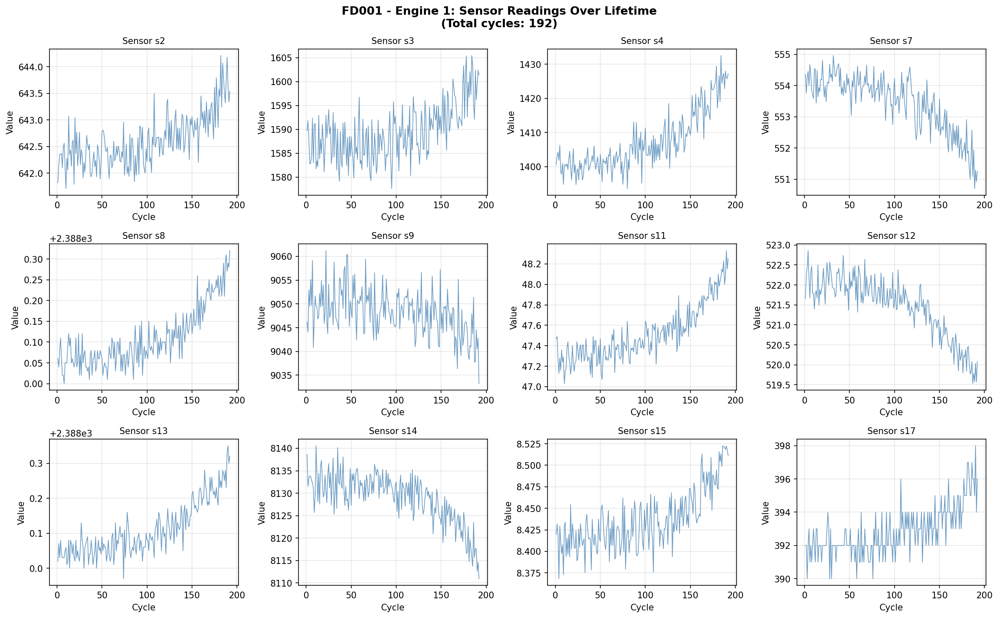

Multivariate time-series readings from simulated turbofan engines.
Estimate remaining cycles before failure using sensor degradation patterns.
Model comparison covers all four operating-condition subsets.
Model comparison
Final RMSE results
| Model | FD001 | FD002 | FD003 | FD004 |
|---|---|---|---|---|
| Loading results... | ||||
Best per subset
Lowest RMSE by dataset
Experiment visuals
Sensor behavior and training curves
